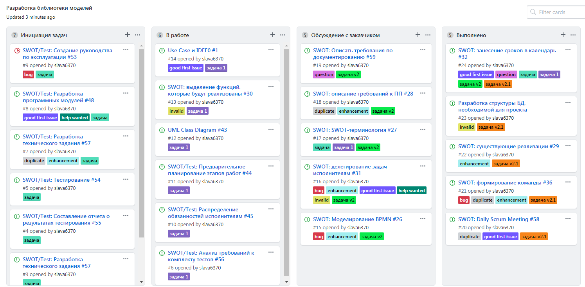

1. Определение состава комнады и распределение ролей
Неведров Борис
ВН - Дизайнер
КО - Тех.писатель
Дунджер Александр
РП - Руководитель проекта
ПП - Программист
НИ - Архитектор
Попов Вячеслав
БА - Тестировщик
СП - Аналитик
2. Выбор USER STORY
Эпик:
SWOT
Проект:
Данные
Задача:
Тест
USER STORY:
Создание продукта для отображения SWOT-анализа процессов развития
 1. Выбранная задача: #1
2. Выбранный проект: Данные
3. Техническая документация
Макет